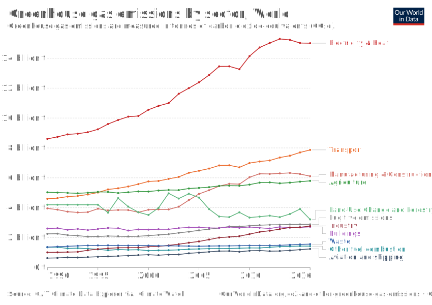

Greenhouse gas emissions

Step 1) Import the data. The data was previously downloaded to my laptop from the IEA website, the International Energy Agency.
#read the dataset into “R”. The dataset will be called "data".
data <- read.csv("transport-sector-co2-emissions.csv")Step 2) Display the data.
q = kbl(data) %>%
kable_styling(bootstrap_options = c("responsive"))
q| Year | Passenger.road.vehicles | Aviation | Road.freight.vehicles | Rail | Shipping | Other | Total |
|---|---|---|---|---|---|---|---|
| 2000 | 2.535501 | 0.6737496 | 1.701686 | 0.0856005 | 0.6212492 | 0.1395435 | 5.757330 |
| 2001 | 2.587838 | 0.6567282 | 1.721471 | 0.0822908 | 0.5969978 | 0.1434570 | 5.788783 |
| 2002 | 2.665574 | 0.6638044 | 1.755211 | 0.0841396 | 0.6136864 | 0.1454479 | 5.927863 |
| 2003 | 2.757510 | 0.6601489 | 1.772868 | 0.0869413 | 0.6338820 | 0.1504511 | 6.061802 |
| 2004 | 2.844066 | 0.7025849 | 1.858302 | 0.0937841 | 0.6817377 | 0.1581678 | 6.338643 |
| 2005 | 2.875399 | 0.7292517 | 1.899518 | 0.0998828 | 0.7046803 | 0.1644522 | 6.473184 |
| 2006 | 2.918505 | 0.7374233 | 1.945958 | 0.1045734 | 0.7510526 | 0.1619732 | 6.619485 |
| 2007 | 2.990950 | 0.7560795 | 2.014080 | 0.1041012 | 0.7899854 | 0.1719591 | 6.827155 |
| 2008 | 3.007971 | 0.7475827 | 2.033958 | 0.0954291 | 0.7777452 | 0.1729047 | 6.835590 |
| 2009 | 3.013497 | 0.7082058 | 1.997610 | 0.0827102 | 0.7513541 | 0.1487080 | 6.702085 |
| 2010 | 3.122169 | 0.7434155 | 2.079648 | 0.0857041 | 0.7970451 | 0.1592828 | 6.987265 |
| 2011 | 3.124149 | 0.7652694 | 2.135563 | 0.0955227 | 0.8116652 | 0.1596173 | 7.091786 |
| 2012 | 3.187844 | 0.7754633 | 2.183382 | 0.0906927 | 0.7732162 | 0.1517493 | 7.162347 |
| 2013 | 3.293729 | 0.7966114 | 2.242236 | 0.0910345 | 0.7756384 | 0.1589824 | 7.358232 |
| 2014 | 3.349538 | 0.8226676 | 2.260005 | 0.0900988 | 0.7990478 | 0.1602679 | 7.481625 |
| 2015 | 3.475356 | 0.8681130 | 2.285523 | 0.0905959 | 0.8153315 | 0.1641160 | 7.699036 |
| 2016 | 3.557281 | 0.9086882 | 2.287408 | 0.0886707 | 0.8368530 | 0.1723377 | 7.851238 |
| 2017 | 3.600975 | 0.9250579 | 2.335725 | 0.0896709 | 0.8539669 | 0.1801360 | 7.985531 |
| 2018 | 3.622373 | 0.9295247 | 2.365827 | 0.0835185 | 0.8550985 | 0.1779856 | 8.034327 |
Step 3) Display the data.
data_long <- data %>%
pivot_longer(!Year, names_to = "Transport_type", values_to = "Emissions")
q1 <- kbl(data_long) %>%
kable_styling(bootstrap_options = c("responsive"))
head(q1)## [1] "<table class=\"table table-responsive\" style=\"margin-left: auto; margin-right: auto;\">\n <thead>\n <tr>\n <th style=\"text-align:right;\"> Year </th>\n <th style=\"text-align:left;\"> Transport_type </th>\n <th style=\"text-align:right;\"> Emissions </th>\n </tr>\n </thead>\n<tbody>\n <tr>\n <td style=\"text-align:right;\"> 2000 </td>\n <td style=\"text-align:left;\"> Passenger.road.vehicles </td>\n <td style=\"text-align:right;\"> 2.5355011 </td>\n </tr>\n <tr>\n <td style=\"text-align:right;\"> 2000 </td>\n <td style=\"text-align:left;\"> Aviation </td>\n <td style=\"text-align:right;\"> 0.6737496 </td>\n </tr>\n <tr>\n <td style=\"text-align:right;\"> 2000 </td>\n <td style=\"text-align:left;\"> Road.freight.vehicles </td>\n <td style=\"text-align:right;\"> 1.7016863 </td>\n </tr>\n <tr>\n <td style=\"text-align:right;\"> 2000 </td>\n <td style=\"text-align:left;\"> Rail </td>\n <td style=\"text-align:right;\"> 0.0856005 </td>\n </tr>\n <tr>\n <td style=\"text-align:right;\"> 2000 </td>\n <td style=\"text-align:left;\"> Shipping </td>\n <td style=\"text-align:right;\"> 0.6212492 </td>\n </tr>\n <tr>\n <td style=\"text-align:right;\"> 2000 </td>\n <td style=\"text-align:left;\"> Other </td>\n <td style=\"text-align:right;\"> 0.1395435 </td>\n </tr>\n <tr>\n <td style=\"text-align:right;\"> 2000 </td>\n <td style=\"text-align:left;\"> Total </td>\n <td style=\"text-align:right;\"> 5.7573301 </td>\n </tr>\n <tr>\n <td style=\"text-align:right;\"> 2001 </td>\n <td style=\"text-align:left;\"> Passenger.road.vehicles </td>\n <td style=\"text-align:right;\"> 2.5878382 </td>\n </tr>\n <tr>\n <td style=\"text-align:right;\"> 2001 </td>\n <td style=\"text-align:left;\"> Aviation </td>\n <td style=\"text-align:right;\"> 0.6567282 </td>\n </tr>\n <tr>\n <td style=\"text-align:right;\"> 2001 </td>\n <td style=\"text-align:left;\"> Road.freight.vehicles </td>\n <td style=\"text-align:right;\"> 1.7214708 </td>\n </tr>\n <tr>\n <td style=\"text-align:right;\"> 2001 </td>\n <td style=\"text-align:left;\"> Rail </td>\n <td style=\"text-align:right;\"> 0.0822908 </td>\n </tr>\n <tr>\n <td style=\"text-align:right;\"> 2001 </td>\n <td style=\"text-align:left;\"> Shipping </td>\n <td style=\"text-align:right;\"> 0.5969978 </td>\n </tr>\n <tr>\n <td style=\"text-align:right;\"> 2001 </td>\n <td style=\"text-align:left;\"> Other </td>\n <td style=\"text-align:right;\"> 0.1434570 </td>\n </tr>\n <tr>\n <td style=\"text-align:right;\"> 2001 </td>\n <td style=\"text-align:left;\"> Total </td>\n <td style=\"text-align:right;\"> 5.7887828 </td>\n </tr>\n <tr>\n <td style=\"text-align:right;\"> 2002 </td>\n <td style=\"text-align:left;\"> Passenger.road.vehicles </td>\n <td style=\"text-align:right;\"> 2.6655741 </td>\n </tr>\n <tr>\n <td style=\"text-align:right;\"> 2002 </td>\n <td style=\"text-align:left;\"> Aviation </td>\n <td style=\"text-align:right;\"> 0.6638044 </td>\n </tr>\n <tr>\n <td style=\"text-align:right;\"> 2002 </td>\n <td style=\"text-align:left;\"> Road.freight.vehicles </td>\n <td style=\"text-align:right;\"> 1.7552107 </td>\n </tr>\n <tr>\n <td style=\"text-align:right;\"> 2002 </td>\n <td style=\"text-align:left;\"> Rail </td>\n <td style=\"text-align:right;\"> 0.0841396 </td>\n </tr>\n <tr>\n <td style=\"text-align:right;\"> 2002 </td>\n <td style=\"text-align:left;\"> Shipping </td>\n <td style=\"text-align:right;\"> 0.6136864 </td>\n </tr>\n <tr>\n <td style=\"text-align:right;\"> 2002 </td>\n <td style=\"text-align:left;\"> Other </td>\n <td style=\"text-align:right;\"> 0.1454479 </td>\n </tr>\n <tr>\n <td style=\"text-align:right;\"> 2002 </td>\n <td style=\"text-align:left;\"> Total </td>\n <td style=\"text-align:right;\"> 5.9278632 </td>\n </tr>\n <tr>\n <td style=\"text-align:right;\"> 2003 </td>\n <td style=\"text-align:left;\"> Passenger.road.vehicles </td>\n <td style=\"text-align:right;\"> 2.7575104 </td>\n </tr>\n <tr>\n <td style=\"text-align:right;\"> 2003 </td>\n <td style=\"text-align:left;\"> Aviation </td>\n <td style=\"text-align:right;\"> 0.6601489 </td>\n </tr>\n <tr>\n <td style=\"text-align:right;\"> 2003 </td>\n <td style=\"text-align:left;\"> Road.freight.vehicles </td>\n <td style=\"text-align:right;\"> 1.7728683 </td>\n </tr>\n <tr>\n <td style=\"text-align:right;\"> 2003 </td>\n <td style=\"text-align:left;\"> Rail </td>\n <td style=\"text-align:right;\"> 0.0869413 </td>\n </tr>\n <tr>\n <td style=\"text-align:right;\"> 2003 </td>\n <td style=\"text-align:left;\"> Shipping </td>\n <td style=\"text-align:right;\"> 0.6338820 </td>\n </tr>\n <tr>\n <td style=\"text-align:right;\"> 2003 </td>\n <td style=\"text-align:left;\"> Other </td>\n <td style=\"text-align:right;\"> 0.1504511 </td>\n </tr>\n <tr>\n <td style=\"text-align:right;\"> 2003 </td>\n <td style=\"text-align:left;\"> Total </td>\n <td style=\"text-align:right;\"> 6.0618020 </td>\n </tr>\n <tr>\n <td style=\"text-align:right;\"> 2004 </td>\n <td style=\"text-align:left;\"> Passenger.road.vehicles </td>\n <td style=\"text-align:right;\"> 2.8440660 </td>\n </tr>\n <tr>\n <td style=\"text-align:right;\"> 2004 </td>\n <td style=\"text-align:left;\"> Aviation </td>\n <td style=\"text-align:right;\"> 0.7025849 </td>\n </tr>\n <tr>\n <td style=\"text-align:right;\"> 2004 </td>\n <td style=\"text-align:left;\"> Road.freight.vehicles </td>\n <td style=\"text-align:right;\"> 1.8583022 </td>\n </tr>\n <tr>\n <td style=\"text-align:right;\"> 2004 </td>\n <td style=\"text-align:left;\"> Rail </td>\n <td style=\"text-align:right;\"> 0.0937841 </td>\n </tr>\n <tr>\n <td style=\"text-align:right;\"> 2004 </td>\n <td style=\"text-align:left;\"> Shipping </td>\n <td style=\"text-align:right;\"> 0.6817377 </td>\n </tr>\n <tr>\n <td style=\"text-align:right;\"> 2004 </td>\n <td style=\"text-align:left;\"> Other </td>\n <td style=\"text-align:right;\"> 0.1581678 </td>\n </tr>\n <tr>\n <td style=\"text-align:right;\"> 2004 </td>\n <td style=\"text-align:left;\"> Total </td>\n <td style=\"text-align:right;\"> 6.3386426 </td>\n </tr>\n <tr>\n <td style=\"text-align:right;\"> 2005 </td>\n <td style=\"text-align:left;\"> Passenger.road.vehicles </td>\n <td style=\"text-align:right;\"> 2.8753995 </td>\n </tr>\n <tr>\n <td style=\"text-align:right;\"> 2005 </td>\n <td style=\"text-align:left;\"> Aviation </td>\n <td style=\"text-align:right;\"> 0.7292517 </td>\n </tr>\n <tr>\n <td style=\"text-align:right;\"> 2005 </td>\n <td style=\"text-align:left;\"> Road.freight.vehicles </td>\n <td style=\"text-align:right;\"> 1.8995177 </td>\n </tr>\n <tr>\n <td style=\"text-align:right;\"> 2005 </td>\n <td style=\"text-align:left;\"> Rail </td>\n <td style=\"text-align:right;\"> 0.0998828 </td>\n </tr>\n <tr>\n <td style=\"text-align:right;\"> 2005 </td>\n <td style=\"text-align:left;\"> Shipping </td>\n <td style=\"text-align:right;\"> 0.7046803 </td>\n </tr>\n <tr>\n <td style=\"text-align:right;\"> 2005 </td>\n <td style=\"text-align:left;\"> Other </td>\n <td style=\"text-align:right;\"> 0.1644522 </td>\n </tr>\n <tr>\n <td style=\"text-align:right;\"> 2005 </td>\n <td style=\"text-align:left;\"> Total </td>\n <td style=\"text-align:right;\"> 6.4731841 </td>\n </tr>\n <tr>\n <td style=\"text-align:right;\"> 2006 </td>\n <td style=\"text-align:left;\"> Passenger.road.vehicles </td>\n <td style=\"text-align:right;\"> 2.9185048 </td>\n </tr>\n <tr>\n <td style=\"text-align:right;\"> 2006 </td>\n <td style=\"text-align:left;\"> Aviation </td>\n <td style=\"text-align:right;\"> 0.7374233 </td>\n </tr>\n <tr>\n <td style=\"text-align:right;\"> 2006 </td>\n <td style=\"text-align:left;\"> Road.freight.vehicles </td>\n <td style=\"text-align:right;\"> 1.9459580 </td>\n </tr>\n <tr>\n <td style=\"text-align:right;\"> 2006 </td>\n <td style=\"text-align:left;\"> Rail </td>\n <td style=\"text-align:right;\"> 0.1045734 </td>\n </tr>\n <tr>\n <td style=\"text-align:right;\"> 2006 </td>\n <td style=\"text-align:left;\"> Shipping </td>\n <td style=\"text-align:right;\"> 0.7510526 </td>\n </tr>\n <tr>\n <td style=\"text-align:right;\"> 2006 </td>\n <td style=\"text-align:left;\"> Other </td>\n <td style=\"text-align:right;\"> 0.1619732 </td>\n </tr>\n <tr>\n <td style=\"text-align:right;\"> 2006 </td>\n <td style=\"text-align:left;\"> Total </td>\n <td style=\"text-align:right;\"> 6.6194854 </td>\n </tr>\n <tr>\n <td style=\"text-align:right;\"> 2007 </td>\n <td style=\"text-align:left;\"> Passenger.road.vehicles </td>\n <td style=\"text-align:right;\"> 2.9909496 </td>\n </tr>\n <tr>\n <td style=\"text-align:right;\"> 2007 </td>\n <td style=\"text-align:left;\"> Aviation </td>\n <td style=\"text-align:right;\"> 0.7560795 </td>\n </tr>\n <tr>\n <td style=\"text-align:right;\"> 2007 </td>\n <td style=\"text-align:left;\"> Road.freight.vehicles </td>\n <td style=\"text-align:right;\"> 2.0140801 </td>\n </tr>\n <tr>\n <td style=\"text-align:right;\"> 2007 </td>\n <td style=\"text-align:left;\"> Rail </td>\n <td style=\"text-align:right;\"> 0.1041012 </td>\n </tr>\n <tr>\n <td style=\"text-align:right;\"> 2007 </td>\n <td style=\"text-align:left;\"> Shipping </td>\n <td style=\"text-align:right;\"> 0.7899854 </td>\n </tr>\n <tr>\n <td style=\"text-align:right;\"> 2007 </td>\n <td style=\"text-align:left;\"> Other </td>\n <td style=\"text-align:right;\"> 0.1719591 </td>\n </tr>\n <tr>\n <td style=\"text-align:right;\"> 2007 </td>\n <td style=\"text-align:left;\"> Total </td>\n <td style=\"text-align:right;\"> 6.8271549 </td>\n </tr>\n <tr>\n <td style=\"text-align:right;\"> 2008 </td>\n <td style=\"text-align:left;\"> Passenger.road.vehicles </td>\n <td style=\"text-align:right;\"> 3.0079709 </td>\n </tr>\n <tr>\n <td style=\"text-align:right;\"> 2008 </td>\n <td style=\"text-align:left;\"> Aviation </td>\n <td style=\"text-align:right;\"> 0.7475827 </td>\n </tr>\n <tr>\n <td style=\"text-align:right;\"> 2008 </td>\n <td style=\"text-align:left;\"> Road.freight.vehicles </td>\n <td style=\"text-align:right;\"> 2.0339578 </td>\n </tr>\n <tr>\n <td style=\"text-align:right;\"> 2008 </td>\n <td style=\"text-align:left;\"> Rail </td>\n <td style=\"text-align:right;\"> 0.0954291 </td>\n </tr>\n <tr>\n <td style=\"text-align:right;\"> 2008 </td>\n <td style=\"text-align:left;\"> Shipping </td>\n <td style=\"text-align:right;\"> 0.7777452 </td>\n </tr>\n <tr>\n <td style=\"text-align:right;\"> 2008 </td>\n <td style=\"text-align:left;\"> Other </td>\n <td style=\"text-align:right;\"> 0.1729047 </td>\n </tr>\n <tr>\n <td style=\"text-align:right;\"> 2008 </td>\n <td style=\"text-align:left;\"> Total </td>\n <td style=\"text-align:right;\"> 6.8355904 </td>\n </tr>\n <tr>\n <td style=\"text-align:right;\"> 2009 </td>\n <td style=\"text-align:left;\"> Passenger.road.vehicles </td>\n <td style=\"text-align:right;\"> 3.0134969 </td>\n </tr>\n <tr>\n <td style=\"text-align:right;\"> 2009 </td>\n <td style=\"text-align:left;\"> Aviation </td>\n <td style=\"text-align:right;\"> 0.7082058 </td>\n </tr>\n <tr>\n <td style=\"text-align:right;\"> 2009 </td>\n <td style=\"text-align:left;\"> Road.freight.vehicles </td>\n <td style=\"text-align:right;\"> 1.9976105 </td>\n </tr>\n <tr>\n <td style=\"text-align:right;\"> 2009 </td>\n <td style=\"text-align:left;\"> Rail </td>\n <td style=\"text-align:right;\"> 0.0827102 </td>\n </tr>\n <tr>\n <td style=\"text-align:right;\"> 2009 </td>\n <td style=\"text-align:left;\"> Shipping </td>\n <td style=\"text-align:right;\"> 0.7513541 </td>\n </tr>\n <tr>\n <td style=\"text-align:right;\"> 2009 </td>\n <td style=\"text-align:left;\"> Other </td>\n <td style=\"text-align:right;\"> 0.1487080 </td>\n </tr>\n <tr>\n <td style=\"text-align:right;\"> 2009 </td>\n <td style=\"text-align:left;\"> Total </td>\n <td style=\"text-align:right;\"> 6.7020855 </td>\n </tr>\n <tr>\n <td style=\"text-align:right;\"> 2010 </td>\n <td style=\"text-align:left;\"> Passenger.road.vehicles </td>\n <td style=\"text-align:right;\"> 3.1221694 </td>\n </tr>\n <tr>\n <td style=\"text-align:right;\"> 2010 </td>\n <td style=\"text-align:left;\"> Aviation </td>\n <td style=\"text-align:right;\"> 0.7434155 </td>\n </tr>\n <tr>\n <td style=\"text-align:right;\"> 2010 </td>\n <td style=\"text-align:left;\"> Road.freight.vehicles </td>\n <td style=\"text-align:right;\"> 2.0796485 </td>\n </tr>\n <tr>\n <td style=\"text-align:right;\"> 2010 </td>\n <td style=\"text-align:left;\"> Rail </td>\n <td style=\"text-align:right;\"> 0.0857041 </td>\n </tr>\n <tr>\n <td style=\"text-align:right;\"> 2010 </td>\n <td style=\"text-align:left;\"> Shipping </td>\n <td style=\"text-align:right;\"> 0.7970451 </td>\n </tr>\n <tr>\n <td style=\"text-align:right;\"> 2010 </td>\n <td style=\"text-align:left;\"> Other </td>\n <td style=\"text-align:right;\"> 0.1592828 </td>\n </tr>\n <tr>\n <td style=\"text-align:right;\"> 2010 </td>\n <td style=\"text-align:left;\"> Total </td>\n <td style=\"text-align:right;\"> 6.9872654 </td>\n </tr>\n <tr>\n <td style=\"text-align:right;\"> 2011 </td>\n <td style=\"text-align:left;\"> Passenger.road.vehicles </td>\n <td style=\"text-align:right;\"> 3.1241486 </td>\n </tr>\n <tr>\n <td style=\"text-align:right;\"> 2011 </td>\n <td style=\"text-align:left;\"> Aviation </td>\n <td style=\"text-align:right;\"> 0.7652694 </td>\n </tr>\n <tr>\n <td style=\"text-align:right;\"> 2011 </td>\n <td style=\"text-align:left;\"> Road.freight.vehicles </td>\n <td style=\"text-align:right;\"> 2.1355631 </td>\n </tr>\n <tr>\n <td style=\"text-align:right;\"> 2011 </td>\n <td style=\"text-align:left;\"> Rail </td>\n <td style=\"text-align:right;\"> 0.0955227 </td>\n </tr>\n <tr>\n <td style=\"text-align:right;\"> 2011 </td>\n <td style=\"text-align:left;\"> Shipping </td>\n <td style=\"text-align:right;\"> 0.8116652 </td>\n </tr>\n <tr>\n <td style=\"text-align:right;\"> 2011 </td>\n <td style=\"text-align:left;\"> Other </td>\n <td style=\"text-align:right;\"> 0.1596173 </td>\n </tr>\n <tr>\n <td style=\"text-align:right;\"> 2011 </td>\n <td style=\"text-align:left;\"> Total </td>\n <td style=\"text-align:right;\"> 7.0917862 </td>\n </tr>\n <tr>\n <td style=\"text-align:right;\"> 2012 </td>\n <td style=\"text-align:left;\"> Passenger.road.vehicles </td>\n <td style=\"text-align:right;\"> 3.1878436 </td>\n </tr>\n <tr>\n <td style=\"text-align:right;\"> 2012 </td>\n <td style=\"text-align:left;\"> Aviation </td>\n <td style=\"text-align:right;\"> 0.7754633 </td>\n </tr>\n <tr>\n <td style=\"text-align:right;\"> 2012 </td>\n <td style=\"text-align:left;\"> Road.freight.vehicles </td>\n <td style=\"text-align:right;\"> 2.1833823 </td>\n </tr>\n <tr>\n <td style=\"text-align:right;\"> 2012 </td>\n <td style=\"text-align:left;\"> Rail </td>\n <td style=\"text-align:right;\"> 0.0906927 </td>\n </tr>\n <tr>\n <td style=\"text-align:right;\"> 2012 </td>\n <td style=\"text-align:left;\"> Shipping </td>\n <td style=\"text-align:right;\"> 0.7732162 </td>\n </tr>\n <tr>\n <td style=\"text-align:right;\"> 2012 </td>\n <td style=\"text-align:left;\"> Other </td>\n <td style=\"text-align:right;\"> 0.1517493 </td>\n </tr>\n <tr>\n <td style=\"text-align:right;\"> 2012 </td>\n <td style=\"text-align:left;\"> Total </td>\n <td style=\"text-align:right;\"> 7.1623473 </td>\n </tr>\n <tr>\n <td style=\"text-align:right;\"> 2013 </td>\n <td style=\"text-align:left;\"> Passenger.road.vehicles </td>\n <td style=\"text-align:right;\"> 3.2937288 </td>\n </tr>\n <tr>\n <td style=\"text-align:right;\"> 2013 </td>\n <td style=\"text-align:left;\"> Aviation </td>\n <td style=\"text-align:right;\"> 0.7966114 </td>\n </tr>\n <tr>\n <td style=\"text-align:right;\"> 2013 </td>\n <td style=\"text-align:left;\"> Road.freight.vehicles </td>\n <td style=\"text-align:right;\"> 2.2422361 </td>\n </tr>\n <tr>\n <td style=\"text-align:right;\"> 2013 </td>\n <td style=\"text-align:left;\"> Rail </td>\n <td style=\"text-align:right;\"> 0.0910345 </td>\n </tr>\n <tr>\n <td style=\"text-align:right;\"> 2013 </td>\n <td style=\"text-align:left;\"> Shipping </td>\n <td style=\"text-align:right;\"> 0.7756384 </td>\n </tr>\n <tr>\n <td style=\"text-align:right;\"> 2013 </td>\n <td style=\"text-align:left;\"> Other </td>\n <td style=\"text-align:right;\"> 0.1589824 </td>\n </tr>\n <tr>\n <td style=\"text-align:right;\"> 2013 </td>\n <td style=\"text-align:left;\"> Total </td>\n <td style=\"text-align:right;\"> 7.3582317 </td>\n </tr>\n <tr>\n <td style=\"text-align:right;\"> 2014 </td>\n <td style=\"text-align:left;\"> Passenger.road.vehicles </td>\n <td style=\"text-align:right;\"> 3.3495383 </td>\n </tr>\n <tr>\n <td style=\"text-align:right;\"> 2014 </td>\n <td style=\"text-align:left;\"> Aviation </td>\n <td style=\"text-align:right;\"> 0.8226676 </td>\n </tr>\n <tr>\n <td style=\"text-align:right;\"> 2014 </td>\n <td style=\"text-align:left;\"> Road.freight.vehicles </td>\n <td style=\"text-align:right;\"> 2.2600048 </td>\n </tr>\n <tr>\n <td style=\"text-align:right;\"> 2014 </td>\n <td style=\"text-align:left;\"> Rail </td>\n <td style=\"text-align:right;\"> 0.0900988 </td>\n </tr>\n <tr>\n <td style=\"text-align:right;\"> 2014 </td>\n <td style=\"text-align:left;\"> Shipping </td>\n <td style=\"text-align:right;\"> 0.7990478 </td>\n </tr>\n <tr>\n <td style=\"text-align:right;\"> 2014 </td>\n <td style=\"text-align:left;\"> Other </td>\n <td style=\"text-align:right;\"> 0.1602679 </td>\n </tr>\n <tr>\n <td style=\"text-align:right;\"> 2014 </td>\n <td style=\"text-align:left;\"> Total </td>\n <td style=\"text-align:right;\"> 7.4816252 </td>\n </tr>\n <tr>\n <td style=\"text-align:right;\"> 2015 </td>\n <td style=\"text-align:left;\"> Passenger.road.vehicles </td>\n <td style=\"text-align:right;\"> 3.4753564 </td>\n </tr>\n <tr>\n <td style=\"text-align:right;\"> 2015 </td>\n <td style=\"text-align:left;\"> Aviation </td>\n <td style=\"text-align:right;\"> 0.8681130 </td>\n </tr>\n <tr>\n <td style=\"text-align:right;\"> 2015 </td>\n <td style=\"text-align:left;\"> Road.freight.vehicles </td>\n <td style=\"text-align:right;\"> 2.2855229 </td>\n </tr>\n <tr>\n <td style=\"text-align:right;\"> 2015 </td>\n <td style=\"text-align:left;\"> Rail </td>\n <td style=\"text-align:right;\"> 0.0905959 </td>\n </tr>\n <tr>\n <td style=\"text-align:right;\"> 2015 </td>\n <td style=\"text-align:left;\"> Shipping </td>\n <td style=\"text-align:right;\"> 0.8153315 </td>\n </tr>\n <tr>\n <td style=\"text-align:right;\"> 2015 </td>\n <td style=\"text-align:left;\"> Other </td>\n <td style=\"text-align:right;\"> 0.1641160 </td>\n </tr>\n <tr>\n <td style=\"text-align:right;\"> 2015 </td>\n <td style=\"text-align:left;\"> Total </td>\n <td style=\"text-align:right;\"> 7.6990356 </td>\n </tr>\n <tr>\n <td style=\"text-align:right;\"> 2016 </td>\n <td style=\"text-align:left;\"> Passenger.road.vehicles </td>\n <td style=\"text-align:right;\"> 3.5572805 </td>\n </tr>\n <tr>\n <td style=\"text-align:right;\"> 2016 </td>\n <td style=\"text-align:left;\"> Aviation </td>\n <td style=\"text-align:right;\"> 0.9086882 </td>\n </tr>\n <tr>\n <td style=\"text-align:right;\"> 2016 </td>\n <td style=\"text-align:left;\"> Road.freight.vehicles </td>\n <td style=\"text-align:right;\"> 2.2874080 </td>\n </tr>\n <tr>\n <td style=\"text-align:right;\"> 2016 </td>\n <td style=\"text-align:left;\"> Rail </td>\n <td style=\"text-align:right;\"> 0.0886707 </td>\n </tr>\n <tr>\n <td style=\"text-align:right;\"> 2016 </td>\n <td style=\"text-align:left;\"> Shipping </td>\n <td style=\"text-align:right;\"> 0.8368530 </td>\n </tr>\n <tr>\n <td style=\"text-align:right;\"> 2016 </td>\n <td style=\"text-align:left;\"> Other </td>\n <td style=\"text-align:right;\"> 0.1723377 </td>\n </tr>\n <tr>\n <td style=\"text-align:right;\"> 2016 </td>\n <td style=\"text-align:left;\"> Total </td>\n <td style=\"text-align:right;\"> 7.8512383 </td>\n </tr>\n <tr>\n <td style=\"text-align:right;\"> 2017 </td>\n <td style=\"text-align:left;\"> Passenger.road.vehicles </td>\n <td style=\"text-align:right;\"> 3.6009746 </td>\n </tr>\n <tr>\n <td style=\"text-align:right;\"> 2017 </td>\n <td style=\"text-align:left;\"> Aviation </td>\n <td style=\"text-align:right;\"> 0.9250579 </td>\n </tr>\n <tr>\n <td style=\"text-align:right;\"> 2017 </td>\n <td style=\"text-align:left;\"> Road.freight.vehicles </td>\n <td style=\"text-align:right;\"> 2.3357249 </td>\n </tr>\n <tr>\n <td style=\"text-align:right;\"> 2017 </td>\n <td style=\"text-align:left;\"> Rail </td>\n <td style=\"text-align:right;\"> 0.0896709 </td>\n </tr>\n <tr>\n <td style=\"text-align:right;\"> 2017 </td>\n <td style=\"text-align:left;\"> Shipping </td>\n <td style=\"text-align:right;\"> 0.8539669 </td>\n </tr>\n <tr>\n <td style=\"text-align:right;\"> 2017 </td>\n <td style=\"text-align:left;\"> Other </td>\n <td style=\"text-align:right;\"> 0.1801360 </td>\n </tr>\n <tr>\n <td style=\"text-align:right;\"> 2017 </td>\n <td style=\"text-align:left;\"> Total </td>\n <td style=\"text-align:right;\"> 7.9855313 </td>\n </tr>\n <tr>\n <td style=\"text-align:right;\"> 2018 </td>\n <td style=\"text-align:left;\"> Passenger.road.vehicles </td>\n <td style=\"text-align:right;\"> 3.6223726 </td>\n </tr>\n <tr>\n <td style=\"text-align:right;\"> 2018 </td>\n <td style=\"text-align:left;\"> Aviation </td>\n <td style=\"text-align:right;\"> 0.9295247 </td>\n </tr>\n <tr>\n <td style=\"text-align:right;\"> 2018 </td>\n <td style=\"text-align:left;\"> Road.freight.vehicles </td>\n <td style=\"text-align:right;\"> 2.3658269 </td>\n </tr>\n <tr>\n <td style=\"text-align:right;\"> 2018 </td>\n <td style=\"text-align:left;\"> Rail </td>\n <td style=\"text-align:right;\"> 0.0835185 </td>\n </tr>\n <tr>\n <td style=\"text-align:right;\"> 2018 </td>\n <td style=\"text-align:left;\"> Shipping </td>\n <td style=\"text-align:right;\"> 0.8550985 </td>\n </tr>\n <tr>\n <td style=\"text-align:right;\"> 2018 </td>\n <td style=\"text-align:left;\"> Other </td>\n <td style=\"text-align:right;\"> 0.1779856 </td>\n </tr>\n <tr>\n <td style=\"text-align:right;\"> 2018 </td>\n <td style=\"text-align:left;\"> Total </td>\n <td style=\"text-align:right;\"> 8.0343270 </td>\n </tr>\n</tbody>\n</table>"data_long$Transport_type <- factor(data_long$Transport_type, levels=c("Total","Passenger.road.vehicles", "Road.freight.vehicles", "Aviation", "Shipping", "Other","Rail" ), labels = c("Total","Passenger road \n vehicles", "Road freight \n vehicles", "Aviation", "Shipping", "Other","Rail" ) )
tp = ggplot(data=data_long,aes(x=Year, y= Emissions, colour=Transport_type)) +
geom_line() +
geom_text_repel(data = subset(data_long, Year == "2018"), aes(x=Year, y= Emissions, label = subset(data_long, Year == "2018")$Transport_type), segment.color = NA, size = 5) + ggtitle("Greenhouse gas emissions by transport sector")+
scale_colour_discrete(guide = 'none') +
theme_light(base_size = 15) +
theme(plot.margin = unit(c(1,1,1,1), "lines")) +
theme(panel.background = element_rect(fill = "#FFFFFF", colour = "#FFFFFF"), plot.background = element_rect(fill = "#FFFFFF", colour = "#FFFFFF")) +
scale_y_continuous(name = "Gigatons")
tp